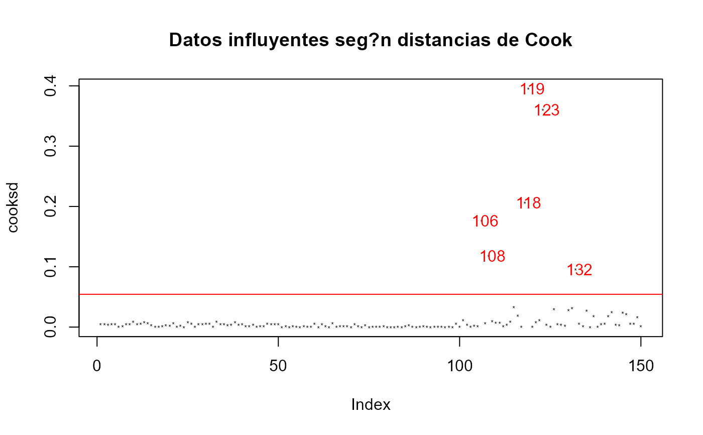

Encontrar los outliers de un LM, LMM, GLM.
Examples
data(iris)
modelo <- glm(Petal.Width ~ Petal.Length, family = gaussian("log"), data=iris)
outliers.plot3(modelo)

#> 1 2 3 4 5 6 7 8 9 10 11 12 13
#> FALSE FALSE FALSE FALSE FALSE FALSE FALSE FALSE FALSE FALSE FALSE FALSE FALSE
#> 14 15 16 17 18 19 20 21 22 23 24 25 26
#> FALSE FALSE FALSE FALSE FALSE FALSE FALSE FALSE FALSE FALSE FALSE FALSE FALSE
#> 27 28 29 30 31 32 33 34 35 36 37 38 39
#> FALSE FALSE FALSE FALSE FALSE FALSE FALSE FALSE FALSE FALSE FALSE FALSE FALSE
#> 40 41 42 43 44 45 46 47 48 49 50 51 52
#> FALSE FALSE FALSE FALSE FALSE FALSE FALSE FALSE FALSE FALSE FALSE FALSE FALSE
#> 53 54 55 56 57 58 59 60 61 62 63 64 65
#> FALSE FALSE FALSE FALSE FALSE FALSE FALSE FALSE FALSE FALSE FALSE FALSE FALSE
#> 66 67 68 69 70 71 72 73 74 75 76 77 78
#> FALSE FALSE FALSE FALSE FALSE FALSE FALSE FALSE FALSE FALSE FALSE FALSE FALSE
#> 79 80 81 82 83 84 85 86 87 88 89 90 91
#> FALSE FALSE FALSE FALSE FALSE FALSE FALSE FALSE FALSE FALSE FALSE FALSE FALSE
#> 92 93 94 95 96 97 98 99 100 101 102 103 104
#> FALSE FALSE FALSE FALSE FALSE FALSE FALSE FALSE FALSE FALSE FALSE FALSE FALSE
#> 105 106 107 108 109 110 111 112 113 114 115 116 117
#> FALSE TRUE FALSE TRUE FALSE FALSE FALSE FALSE FALSE FALSE FALSE FALSE FALSE
#> 118 119 120 121 122 123 124 125 126 127 128 129 130
#> TRUE TRUE FALSE FALSE FALSE TRUE FALSE FALSE FALSE FALSE FALSE FALSE FALSE
#> 131 132 133 134 135 136 137 138 139 140 141 142 143
#> FALSE TRUE FALSE FALSE FALSE FALSE FALSE FALSE FALSE FALSE FALSE FALSE FALSE
#> 144 145 146 147 148 149 150
#> FALSE FALSE FALSE FALSE FALSE FALSE FALSE
#> Las distancias de Cook, es una medida de cómo influye la observación identificada como outlier sobre la estimación de B (pendiente) al ser retirada del conjunto de datos. Una distancia de Cook grande significa que una observación tiene un peso grande en la estimación de la pendiente.